Desktop app
Abuse Voicemail Transcriber
Local AI transcription and analysis for large collections of voicemail greetings.
Electron / Whisper / Node.js
↗
Pictures I’ve taken and wanted to keep.
Songs, demos and sounds made with too many pedals.
There is no
final pedalboard.
Useful things I’ve built to solve real problems.
Local AI transcription and analysis for large collections of voicemail greetings.
Electron / Whisper / Node.js
↗Tools that turn repetitive compliance work into structured, trackable processes.
Python / AWS / Zendesk
↗Focused tools for faster investigations and safer account actions.
JavaScript / APIs / Slack
↗Occasional thoughts about making things and figuring things out.
Why I wanted a personal website again, and what I plan to put here.
A few lessons from making internal tools people actually use.
Acceptance, patch cables and the illusion of completion.
Elsewhere on the internet